The SCP package provides a comprehensive set of tools for single cell data processing and downstream analysis.
The package includes facilities for:
- Integrated single cell quality control methods.
- Pipelines embedded with multiple methods for normalization, feature reduction, and cell population identification.
- Pipelines embedded with multiple data integration methods.
- Multiple single cell downstream analyses such as identification of differential features, enrichment analysis, GSEA analysis, identification of dynamic features, PAGA, RNA velocity, etc.
- Multiple methods for automatic annotation of single-cell data and methods for projection between single-cell datasets.
- High-quality visualization for multiple analysis results.
- Fast deployment of single-cell data to a shiny app.
The functions in the SCP package are all developed around the Seurat object and compatible with other Seurat functions.
Requirement
SCP requires python 3.7-3.9 to be installed in the environment.
Check the version of python in the terminal:
python --versionor in the R environment:
if (!require("reticulate", quietly = TRUE)) {
install.packages("reticulate")
}
py <- Sys.which("python")
reticulate:::python_version(py)Installation
You can install the development version of SCP from GitHub with:
if (!require("devtools", quietly = TRUE)) {
install.packages("devtools")
}
devtools::install_github("zhanghao-njmu/SCP", INSTALL_opts = "--no-multiarch")Example
Load the Data
The analysis is based on a subsetted version of mouse pancreas data.
library(SCP)
data("pancreas1k")
ClassDimPlot(
srt = pancreas1k, group.by = c("CellType", "SubCellType"),
reduction = "UMAP", theme_use = "theme_blank"
)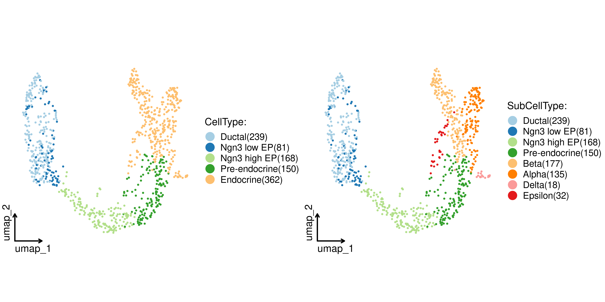
ExpDimPlot(
srt = pancreas1k, features = c("Sox9", "Neurog3", "Fev", "Rbp4"),
reduction = "UMAP", theme_use = "theme_blank"
)
ExpDotPlot(
srt = pancreas1k,
features = c(
"Sox9", "Anxa2", "Bicc1", # Ductal
"Neurog3", "Hes6", # EPs
"Fev", "Neurod1", # Pre-endocrine
"Rbp4", "Pyy", # Endocrine
"Ins1", "Gcg", "Sst", "Ghrl" # Beta, Alpha, Delta, Epsilon
),
cell_split_by = c("CellType", "SubCellType")
)
CellQC
pancreas1k <- RunCellQC(srt = pancreas1k)
ClassDimPlot(srt = pancreas1k, group.by = "CellQC", reduction = "UMAP")
ClassStatPlot(srt = pancreas1k, stat.by = "CellQC", group.by = "CellType", label = TRUE)
ClassStatPlot(
srt = pancreas1k,
stat.by = c(
"db_qc", "outlier_qc", "umi_qc", "gene_qc",
"mito_qc", "ribo_qc", "ribo_mito_ratio_qc", "species_qc"
),
plot_type = "upset", stat_level = "Fail"
)
Standard SCP
pancreas1k <- Standard_SCP(srt = pancreas1k)
ClassDimPlot(
srt = pancreas1k, group.by = c("CellType", "SubCellType"),
reduction = "StandardUMAP2D", theme_use = "theme_blank"
)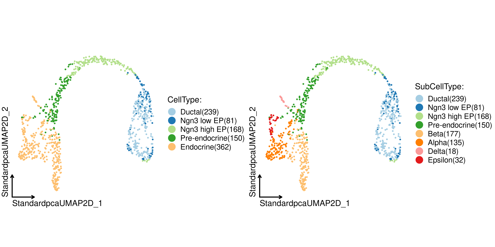
ClassDimPlot3D(srt = pancreas1k, group.by = "SubCellType")
ClassDimPlot3D
ExpDimPlot3D(srt = pancreas1k, features = c("Sox9", "Neurog3", "Fev", "Rbp4"))
ExpDimPlot3D
Integration SCP
Example data for integration is panc8(eight human pancreas datasets)
if (!require("SeuratData", quietly = TRUE)) {
devtools::install_github("satijalab/seurat-data")
}
library(SeuratData)
suppressWarnings(InstallData("panc8"))
data("panc8")
cell_sub <- unlist(lapply(split(colnames(panc8), panc8$tech), function(x) sample(x, size = 500)))
panc8 <- subset(panc8, cells = cell_sub)
panc8 <- Integration_SCP(srtMerge = panc8, batch = "tech", integration_method = "Seurat")
ClassDimPlot(
srt = panc8, group.by = c("celltype", "tech"), reduction = "SeuratUMAP2D",
theme_use = "theme_blank"
)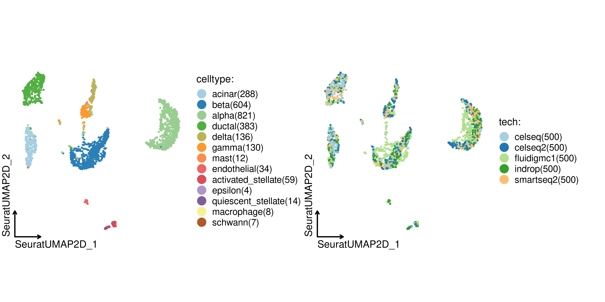
Cell projection between single-cell datasets
library(stringr)
panc8 <- RenameFeatures(srt = panc8, newnames = make.unique(str_to_title(rownames(panc8))))
pancreas1k <- RunKNNMap(srt_query = pancreas1k, srt_ref = panc8, ref_umap = "SeuratUMAP2D")
ProjectionPlot(
srt_query = pancreas1k, srt_ref = panc8,
query_group = "SubCellType", ref_group = "celltype"
)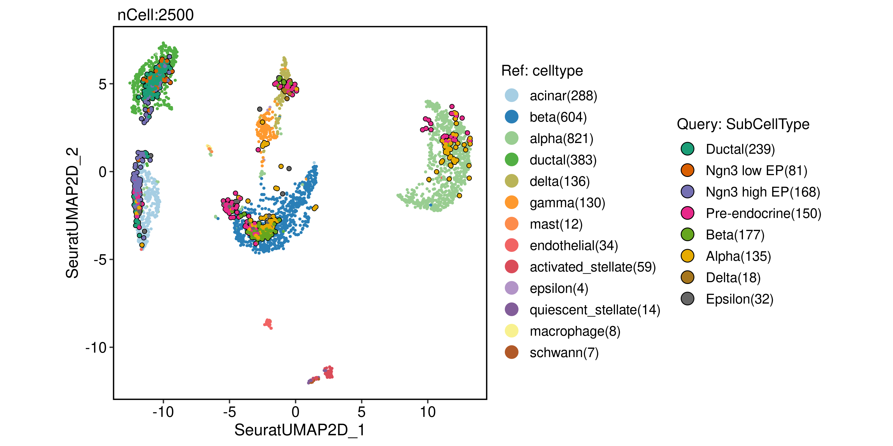
Cell annotation using bulk RNA-seq datasets
data("ref_scMCA")
pancreas1k <- RunKNNPredict(srt_query = pancreas1k, bulk_ref = ref_scMCA, filter_lowfreq = 20)
ClassDimPlot(srt = pancreas1k, group.by = "knnpredict_classification", reduction = "UMAP", label = TRUE)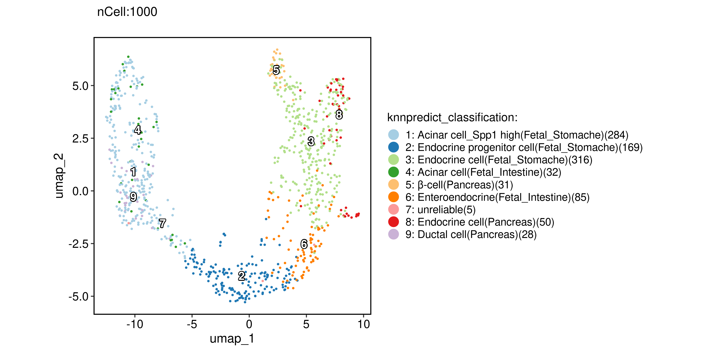
Cell annotation using single-cell datasets
pancreas1k <- RunKNNPredict(
srt_query = pancreas1k, srt_ref = panc8,
ref_group = "celltype", filter_lowfreq = 20
)
ClassDimPlot(srt = pancreas1k, group.by = "knnpredict_classification", reduction = "UMAP", label = TRUE)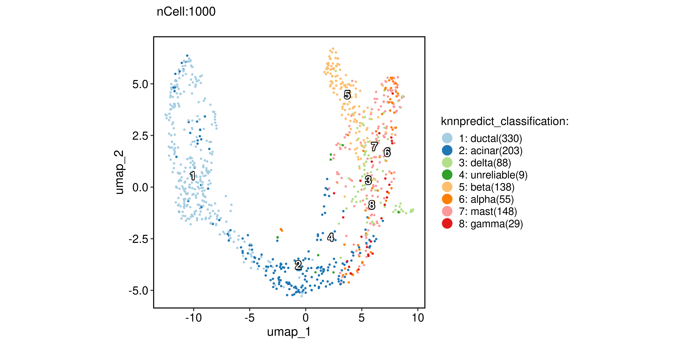
PAGA analysis
pancreas1k <- RunPAGA(
srt = pancreas1k, group_by = "SubCellType",
liner_reduction = "PCA", nonliner_reduction = "UMAP", return_seurat = TRUE
)
PAGAPlot(srt = pancreas1k, reduction = "UMAP", label = TRUE, label_insitu = TRUE, label_repel = TRUE)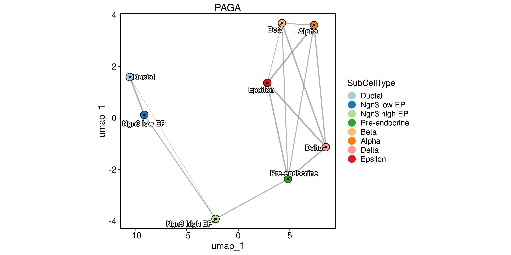
Velocity analysis
pancreas1k <- RunSCVELO(
srt = pancreas1k, group_by = "SubCellType",
liner_reduction = "PCA", nonliner_reduction = "UMAP", return_seurat = TRUE
)
VelocityPlot(srt = pancreas1k, reduction = "UMAP", group_by = "SubCellType")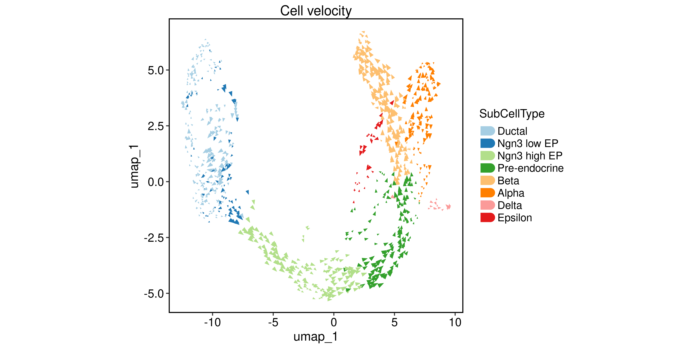
VelocityPlot(srt = pancreas1k, reduction = "UMAP", plot_type = "stream")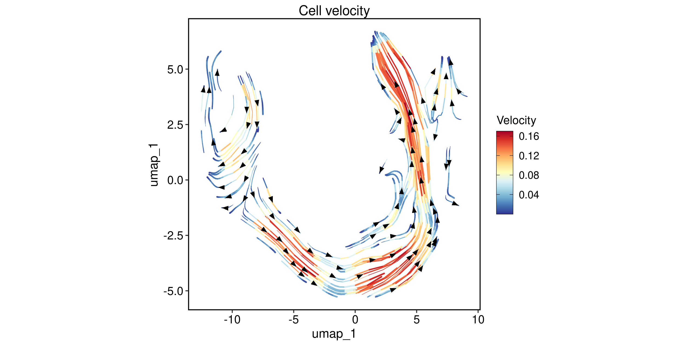
Differential expression analysis
pancreas1k <- RunDEtest(srt = pancreas1k, group_by = "CellType", only.pos = FALSE, fc.threshold = 1)
VolcanoPlot(srt = pancreas1k, group_by = "CellType")
DEGs <- pancreas1k@tools$DEtest_CellType$AllMarkers_wilcox
DEGs <- DEGs[with(DEGs, avg_log2FC > 1 & p_val_adj < 0.05), ]
ht <- ExpHeatmap(
srt = pancreas1k, features = DEGs$gene, feature_split = DEGs$group1, cell_split_by = "CellType",
species = "Mus_musculus", anno_enrichmnet = TRUE, anno_features = TRUE,
row_title_size = 0, height = 5, width = 7
)
print(ht$plot)
Enrichment analysis(over-representation)
pancreas1k <- RunEnrichment(
srt = pancreas1k, group_by = "CellType", enrichment = "GO_BP", species = "Mus_musculus",
DE_threshold = "avg_log2FC > 1 & p_val_adj < 0.05"
)
EnrichmentPlot(
srt = pancreas1k, group_by = "CellType", group_use = c("Ductal", "Endocrine"),
plot_type = "bar"
)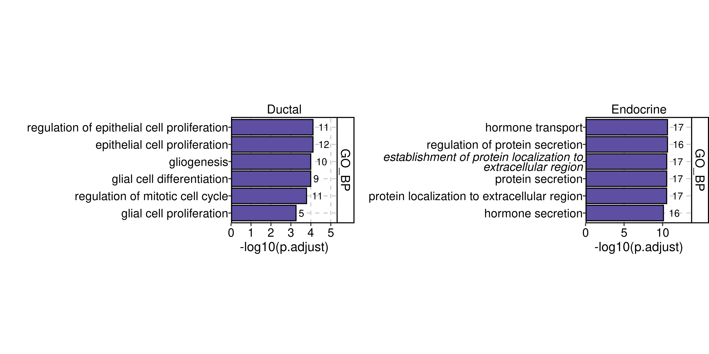
EnrichmentPlot(
srt = pancreas1k, group_by = "CellType", group_use = c("Ductal", "Endocrine"),
plot_type = "wordcloud"
)
Enrichment analysis(GSEA)
pancreas1k <- RunGSEA(
srt = pancreas1k, group_by = "CellType", enrichment = "GO_BP", species = "Mus_musculus",
DE_threshold = "p_val_adj < 0.05"
)
GSEAPlot(srt = pancreas1k, group_by = "CellType", group_use = "Endocrine")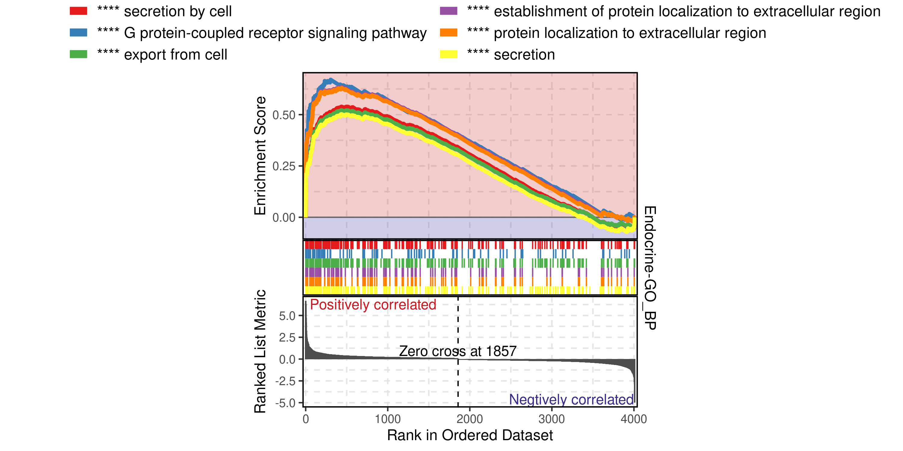
GSEAPlot(srt = pancreas1k, group_by = "CellType", group_use = "Endocrine", geneSetID = "GO:0007186")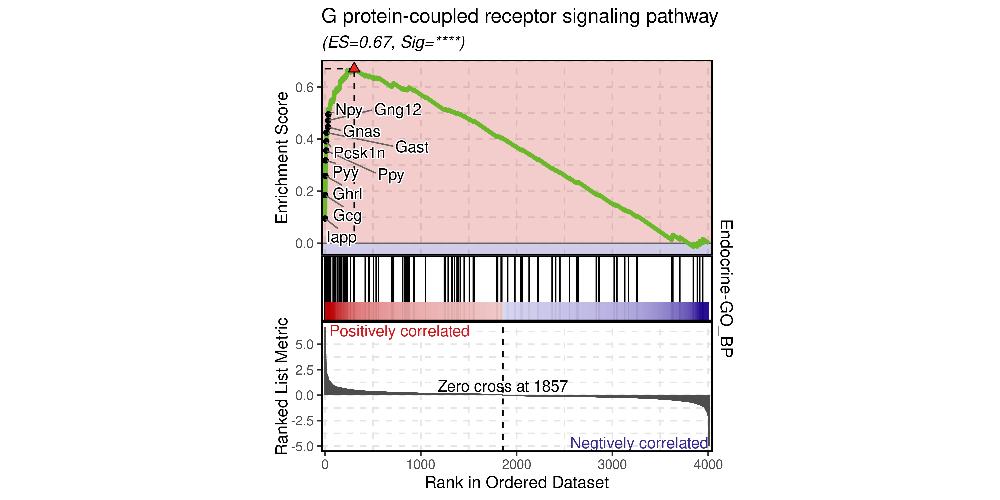
Dynamic features analysis
pancreas1k <- RunSlingshot(srt = pancreas1k, group.by = "SubCellType", reduction = "UMAP", show_plot = TRUE)
pancreas1k <- RunDynamicFeatures(srt = pancreas1k, lineages = c("Lineage1", "Lineage2"), n_candidates = 200)
ht <- DynamicHeatmap(
srt = pancreas1k, lineages = c("Lineage1", "Lineage2"), cell_annotation = "SubCellType",
n_split = 5, reverse_ht = "Lineage1",
species = "Mus_musculus", anno_enrichmnet = TRUE, anno_features = TRUE,
height = 5, width = 7, use_raster = FALSE
)
print(ht$plot)
DynamicPlot(
srt = pancreas1k, lineages = c("Lineage1", "Lineage2"), group.by = "SubCellType",
features = c("Plk1", "Hes1", "Neurod2", "Ghrl", "Gcg", "Ins2"),
compare_lineages = TRUE, compare_features = FALSE
)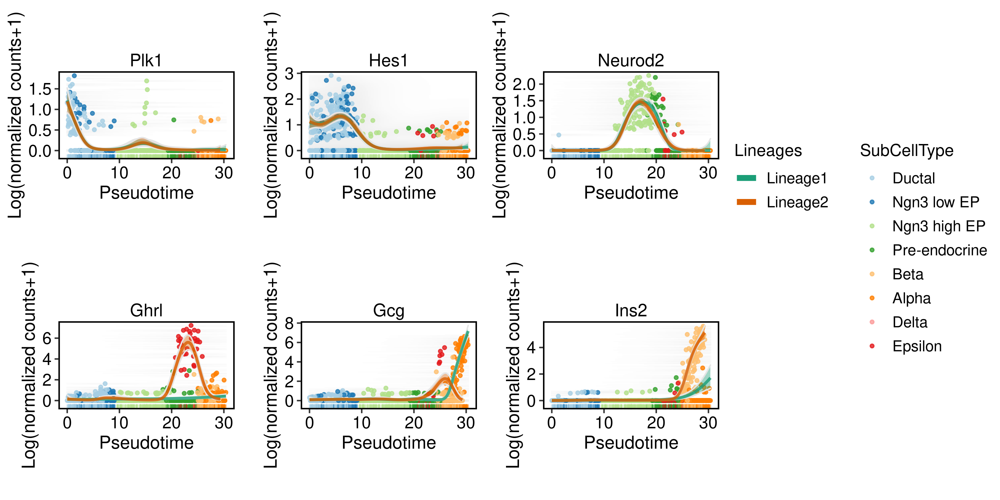
ExpVlnPlot(
srt = pancreas1k, group.by = "SubCellType", bg.by = "CellType",
features = c("Sox9", "Neurod2", "Isl1", "Rbp4"),
comparisons = list(
c("Ductal", "Ngn3 low EP"),
c("Ngn3 high EP", "Pre-endocrine"),
c("Alpha", "Beta")
),
multiplegroup_comparisons = TRUE
)